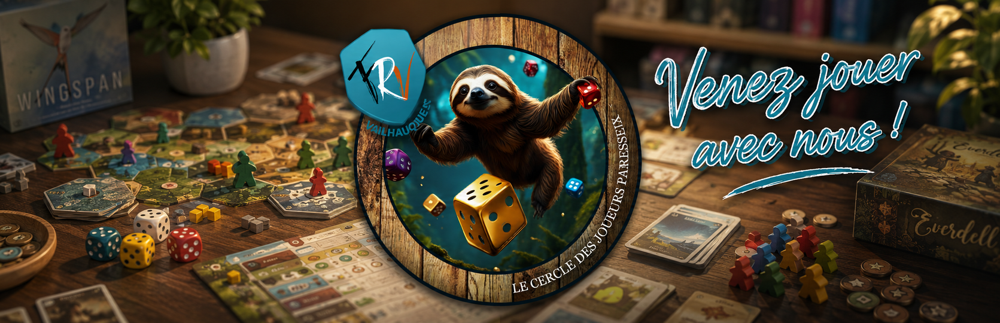

Le Cercle des Joueurs Paresseux a changé sa photo de couverture. 5 j · Toutes les réactions : 11 2 1 de commentaires Celine Barbate Ouiiii 5 j 1
Dernières actualités
Publié le 23 juillet 2026 par le Cercle des Joueurs Paresseux.

Le Cercle des Joueurs Paresseux a changé sa photo de couverture. 5 j · Toutes les réactions : 11 2 1 de commentaires Celine Barbate Ouiiii 5 j 1